FN 3
Brake pads, removing and installing
Special tools, testers and auxiliary items required
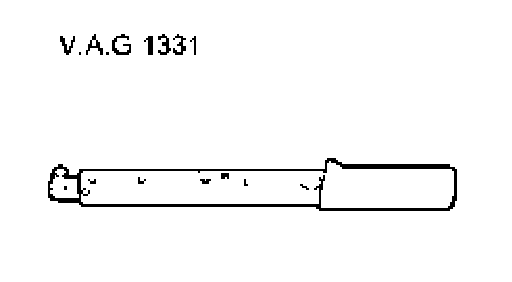
^ Torque wrench V.A.G 1331
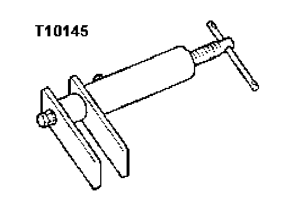
^ Piston resetting tool T10145
Removing
If reusing brake pads, mark location. Install in same position when installing otherwise uneven braking will occur!
- Remove wheels.
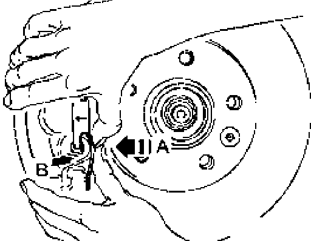
- Press retaining spring in - direction of arrow A - until it can be pressed out of the bore in - direction of arrow B -.
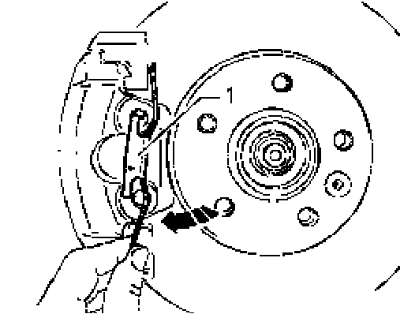
- Turn retaining spring - 1 - clockwise - arrow - until it can be removed from the upper bore.
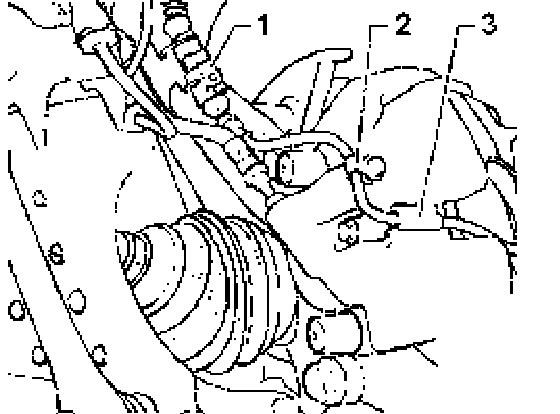
- Separate connector - 1 - for brake pad wear indicator.
- Remove dust cap - 2 - and lift off wire for brake pad wear indicator.
- Remove wire for brake pad wear indicator from retainer - 3 - on caliper.
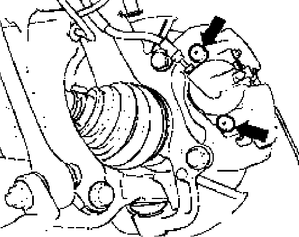
- Remove caps - arrows -.
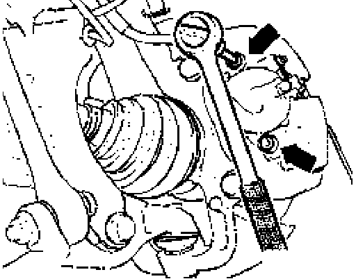
- Remove both guide pins - arrows - from brake caliper.
- Remove brake caliper and suspend with wire so that the weight of the caliper does not cause any stress or damage to the brake line.
- Remove brake pads.
- Clean brake caliper (remove adhesive residue) - the adhesion surface must be dry and clean.
Clean brake caliper with mineral spirits exclusively.
Installing
Before pressing the piston back to insert new brake pads, draw off brake fluid from the reservoir with a bleeder bottle. Otherwise, particularly if reservoir has been topped off, fluid will overflow and cause damage.
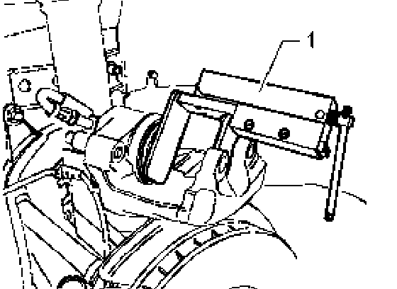
- Press pistons back in with piston resetting tool T10145 - 1
Note:
^ The inner (piston side) brake pads are directional and specific to each side of the vehicle. They are designated by markings that show direction of travel.
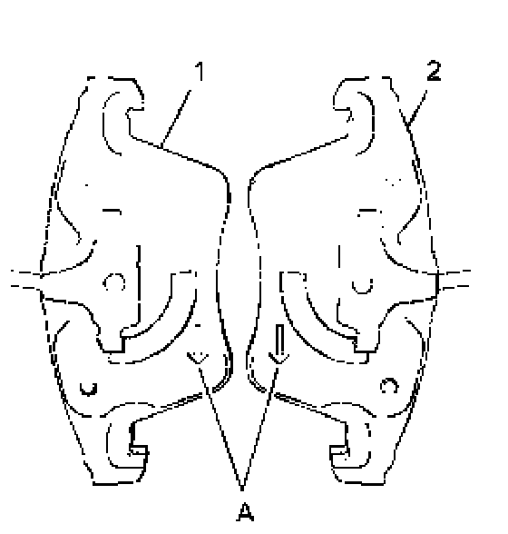
Directional brake pads
1 - Right piston side brake pad
2 - Left piston side brake pad
Note:
^ In installed position, the arrow - A - on the backing plate of the brake pad points down (in rotation direction of brake disc). Install brake pad by inserting retaining springs on pad into piston - arrows -.
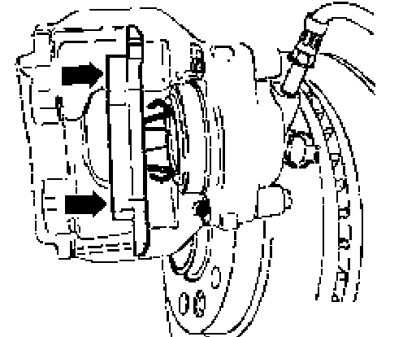
- Remove protective foil from backing plate on outer brake pad.
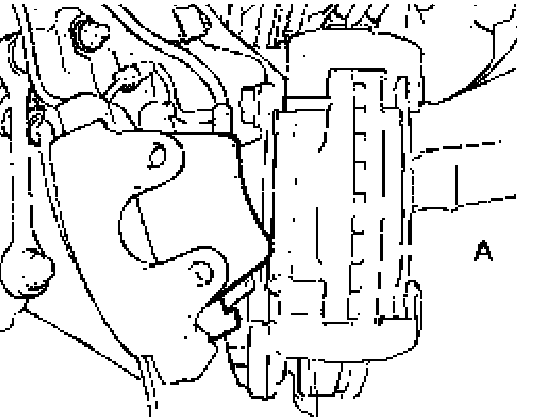
- Set outer brake pad - A - onto the carrier.
Note:
^ When installing the brake caliper, be careful not to let the brake pad adhere itself to the brake caliper before the correct installed position has been achieved.
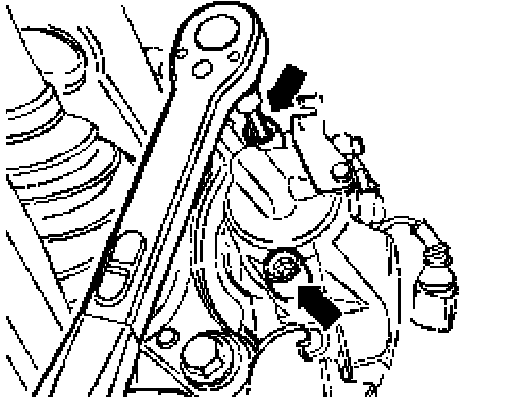
- Attach the brake caliper to the carrier by fastening the guide pins - arrows -.
- Install both caps.
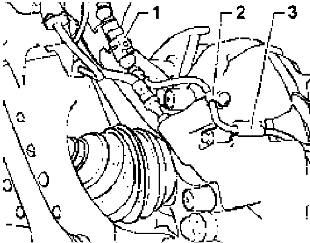
- Reconnect connector - 1 - for brake wear indicator on bracket on wheel bearing housing.
- Secure brake wear indicator wire with dust cap - 2 - on bleeder valve and retainer - 3 - on the brake caliper.
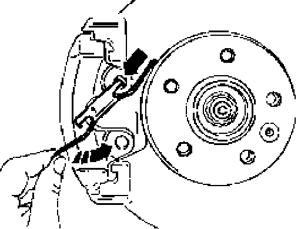
- Install retaining spring into upper bore - arrow - and turn down - direction of arrow -.
- Set retaining spring on the bottom of carrier.
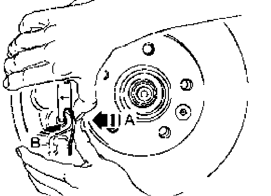
- First press retaining spring in - direction of arrow A -, then at the same time into the bore of brake caliper - direction of arrow B
- Install wheels.
Tightening torque specification for wheel bolts
Wheel bolt to wheel hub: 160 Nm
Note:
^ After replacing brake pads, depress brake pedal firmly several times with vehicle stationary so that the brake pads are properly seated in their normal operating position.
^ After changing brake pads check brake fluid level.
Tightening torque
Brake caliper to carrier 30 Nm